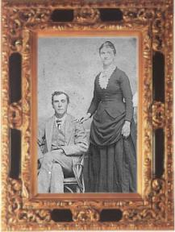

|
|
Amanda Jane HUNTER-MAYFIELD
|
|
|
Sarah Jane MAYFIELD-EDWARDS
Sarah was born in 1847 to Sutherland MAYFIELD(son
of Levi) and Amanda Jane HUNTER in Floyd Co., IN.
She married William Henry EDWARDS on July
2, 1865 in Floyd Co., IN
Her death is not known and she is not buried
with her husband in Crawford Co., IN.
(J.A. Wilson photographer)
This photo was given to me by Doris Edwards-Carnes, Sarah's granddaughter.
Although the resemblence to the above photo is striking, I believe the
one above is of Sarah's mother, Amanda Jane HUNTER-EDWARDS.
|
|
|
MAYFIELD Women
This photograph
was not marked so I am not positive that they are Mayfields, but
something tells me my intuition is correct. The lady on the right looks
like a young Sarah Jane MAYFIELD. I also see a strong family resemblance
to Sarah's daughter, Mary Jane EDWARDS. If the other two ladies are
her sisters they could be Francis, Harriet, or Emma. This is one of the
oldest photographs I own.
(Wilson & Son Photographers)
|

|
Martha Ellen MAYFIELD
Martha was born on October 10, 1854 to Sutherland
MAYFIELD (son of Levi) and Amanda Jane HUNTER in Floyd Co., IN.
She married Eugene SULLIVAN on April 19, 1872
in Floyd Co., IN.
She died on September 8, 1900 in Floyd Co.,
IN and is buried in Tunnel Hill Cemetery, Edwardsville, IN.
|
|

|
Mary MAYFIELD and
Adam STOKER
Mary is the daughter of Sutherland MAYFIELD
(son of Levi) and Amanda Jane HUNTER.
She married Adam STOKER on April 12, 1866
in Floyd Co., IN.
(J.A. Wilson photographer)
|
|
|
William Henry MAYFIELD and
Family
Back row, left to right
Phillip, Lottie, Blanche, Dora or Bessie
Middle row
William Henry, Julia, Armendt, Blanche(Murray's
wife)
Front row
Victor (in William's lap), Gladys,
Clella, Baby Lydia and Lamar(Three children on right are Murray's).
William Henry is the son of John Thomas
MAYFIELD (son of Levi)
|
|
|
Armendt and Katie (Ridgeway)
MAYFIELD
I now understand why there was a problem with
cousins marrying each other. :-)
Armendt was quite a handsome man.
He is the son of William Henry MAYFIELD
|
|
|
Benjamin Franklin MAYFIELD
Benjamin is the son of John Thomas MAYFIELD
(son of Levi)
|
|
|
Harriet (Clark) MAYFIELD
Harriet is Benjamin's wife.
|